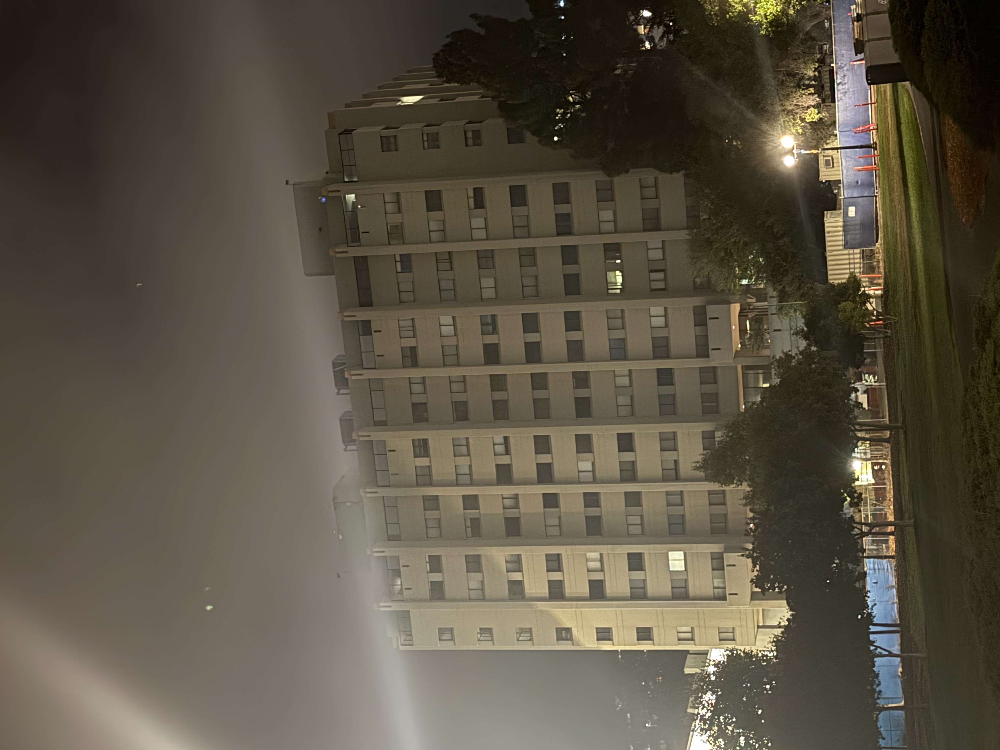
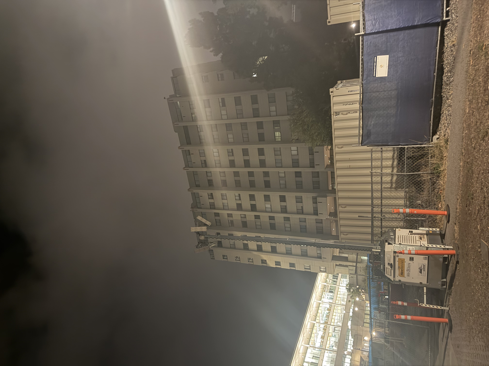

Part 1: Selfie — The Wrong Way vs. The Right Way


These are the two pictures I took of my friend Roshan. In the first photo, a close up, his face appears more rounded and distorted, with his nose looking especially larger. In the second photo, despite the face being similarly sized, it appears flatter and more natural. This is because moving the camera farther away makes his facial features appear more evenly sized; the relative differences in the depths of his features is reduced due to the camera’s distance.
Part 2: Architectural Perspective Compression


This is Evans at night. The effect is not as noticeable as the first one perhaps because the angle isn't very extreme, and because Evans has no distinct features, but the first picture appears slightly compressed.
Part 3: The Dolly Zoom

This is a scene I made at McDonald's with a Happy Meal figurine. It's pretty cool to see that as the figurine and the surrounding objects stay at relatively the same size, the white car in the background gets larger and large due to the dolly zoom effect.